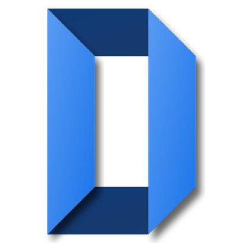

お家のWi-Fiで完結する、2つのAndroidアプリ
広告なし・クラウドの月額なし。書類はスキャンして整理、写真は家の保存先へ自動でバックアップ。

DocScan AI
書類スキャン・AI整理
紙の書類を撮るだけでPDFに。AIがファイル名と保存先を提案し、後から探せます。
- 枠を自動認識・OCR
- AIが命名・フォルダ分類
- スキャンは端末内に保存
ShareOrBackup
Wi-Fi共有・自動バックアップ
同じWi-Fiのスマホ・PC・NASと直接やりとり。帰宅してつながるだけで自動バックアップします。
- フォルダ同期（双方向）
- SMB / SFTP / WebDAV / S3対応
- 削除は7日間 .trash から復元
組み合わせて便利：DocScan AI の保存先フォルダを ShareOrBackup の同期対象にすると、
Wi-Fi接続時にスキャンした書類まで自動でバックアップされます。